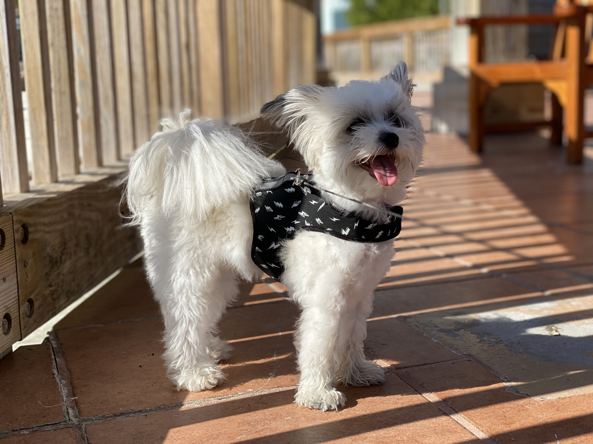
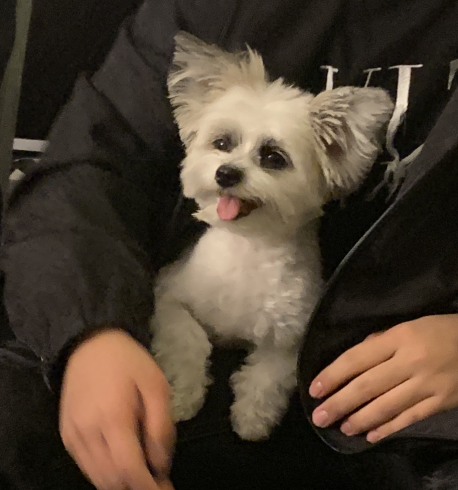
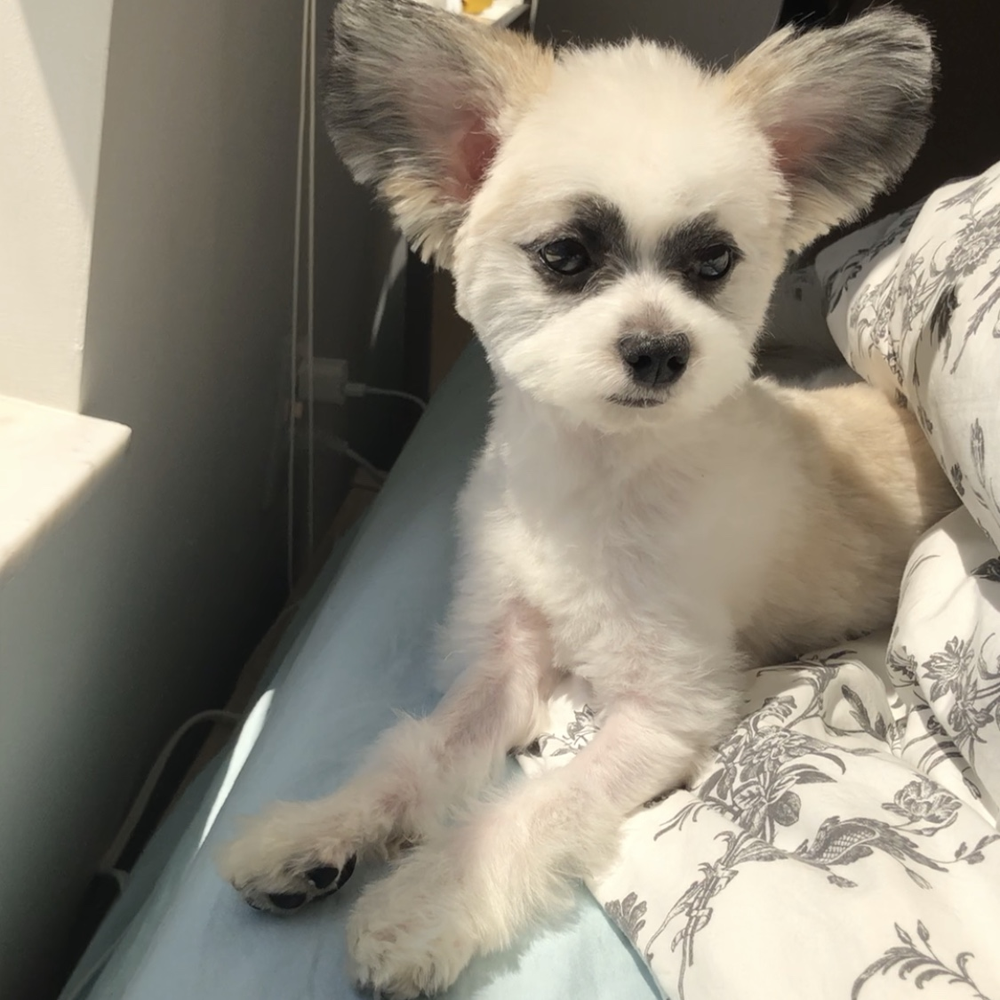

Welcome to my life!
Everyone who first saw me would say “what breed are you?” My body is white with some brown spots. Most noticeable is my pair of big ears. Actually, my body is Maltese and the ears is from Papillon. My dad and mom’s fortuitous encounter made me one of a kind.
 My favorite food is all meat in the world, lamb, beef, salmon, turkey… but mostly my parents give me dry dog food because they say it is good for my health. Sometimes I will get dog food with some chopped carrots. I love carrot just like my parents love me! Treats always make me excited! I can't control myself when I see treats on my mom’s hand, she will ask me to sit down and lift a paw. Actually, I don’t know what those mean but they are the best way to get a yummy snack.
As they say, I’m naughty, and somehow too active. For me, I’m just curious about the hooman’s business. I smell, and pee, then gotten blamed. I wondered why because I just want to mark my area at home. I do not understand hooman, maybe they cannot understand me either.